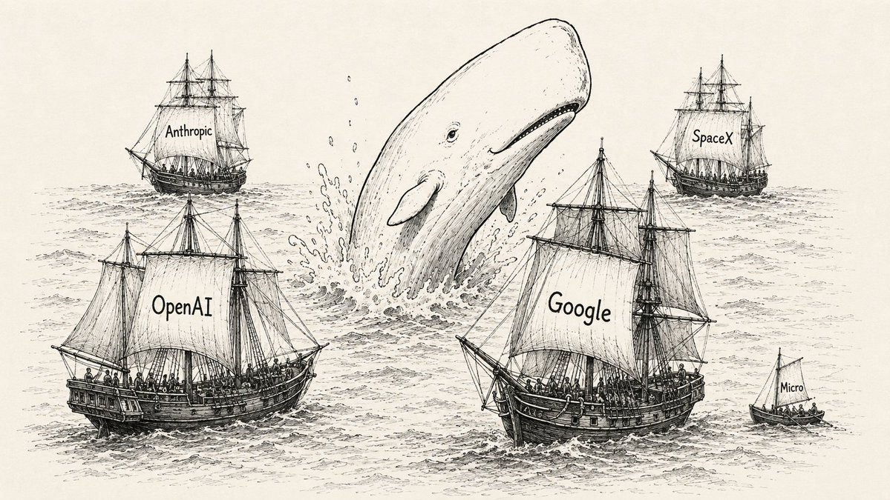
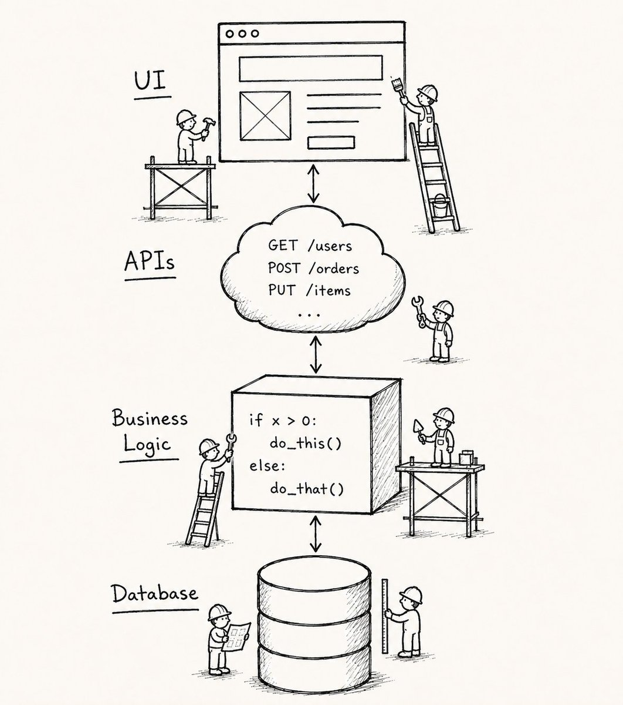
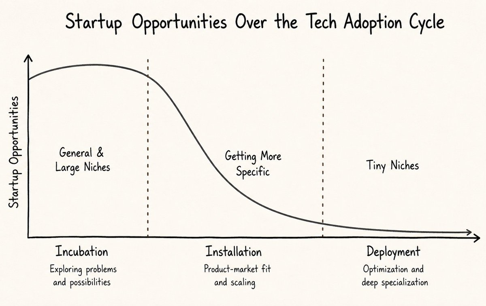
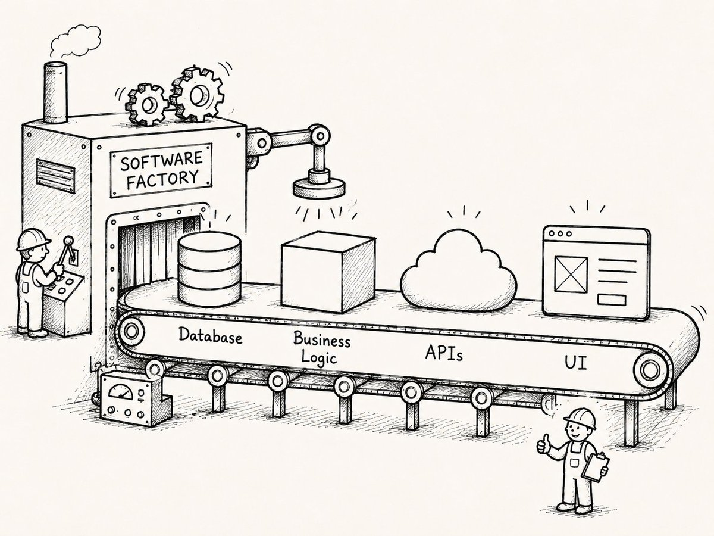
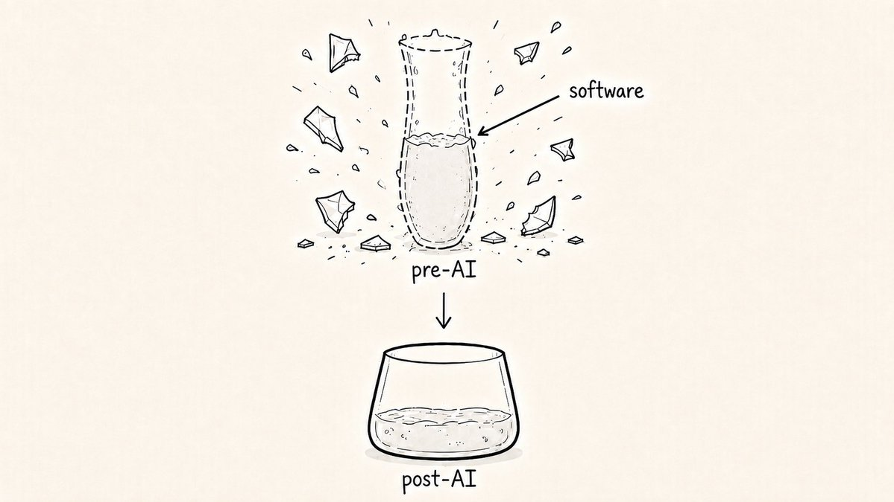
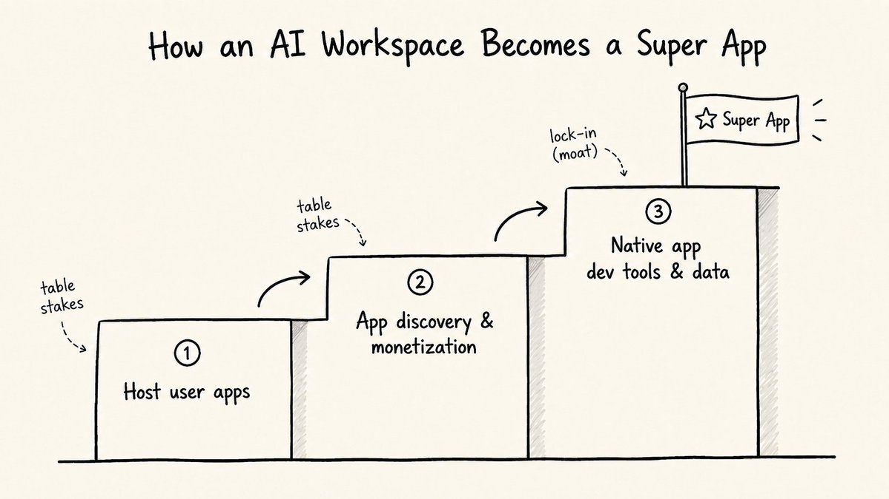
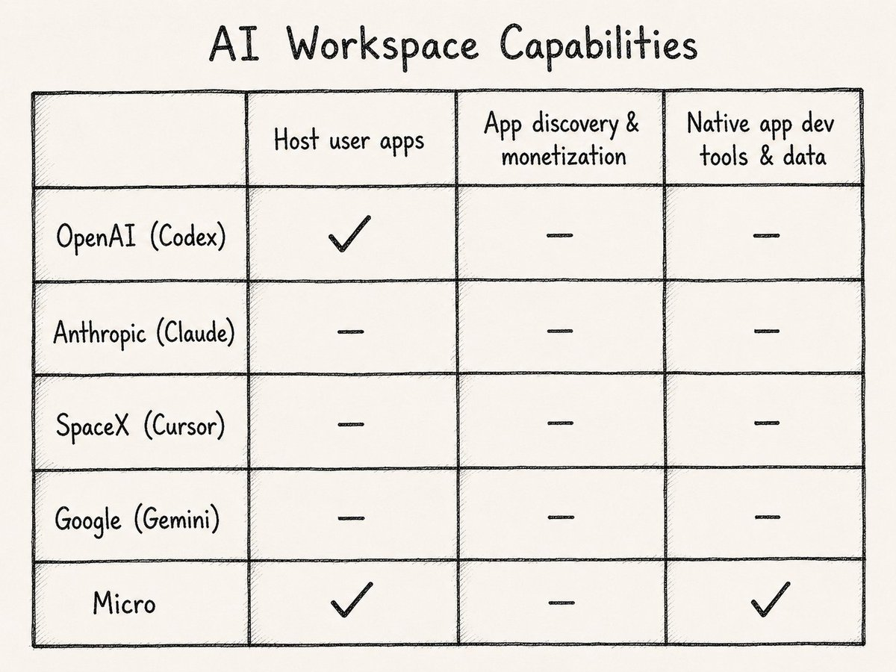
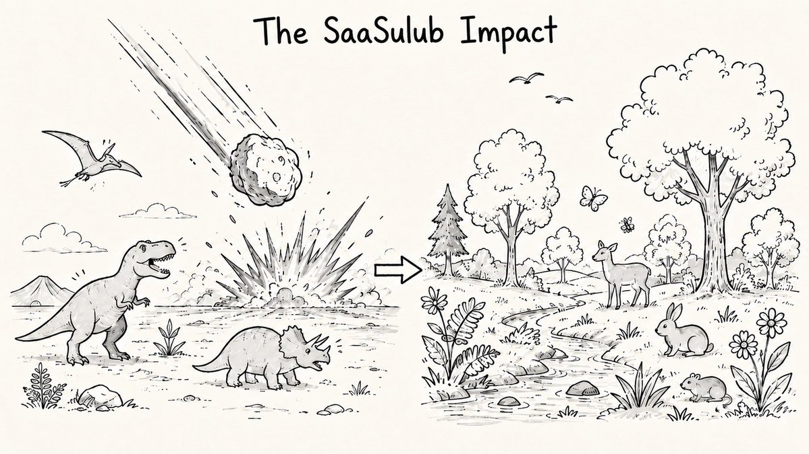

If building startups is like whaling, the super app is Moby Dick.
The metaphor isn't random. The venture capital industry got many of its financing tools and words from whaling - look up the word "carry."
Moby Dick isn't one of those terms, but based on how powerful and elusive the super app is, it should be.
It has been the most coveted kind of product to build but nearly impossible to do so.
That said, the world is changing and a new fleet of whaling ships may have finally cornered the white whale.
Those ships are Anthropic, OpenAI, SpaceX, Google and a few ambitious startups like Micro.

The west is about to finally have its true super app, but there's much more to the legend.
Why the West Always Failed
WeChat is the poster child for super apps, with over a billion users and providing the digital infrastructure for everything in China.
Despite countless attempts, building one in the west has proven to be nearly impossible.
That said, we have actually had a proto-super app in the west for 20 years: email.
Today it is used by 4 billion people and is simultaneously the largest CRM, shopping app, travel app, document storage app, and much more. Like WeChat, it's a large communications platform people use to do a number of other things.
But email never felt like a super app.
To be super, the mini-apps have to to actually replace the standalone versions.
CRM in Gmail doesn't replace Gmail, Shopping in Outlook doesn't replace Amazon, and so on.
The reason this never happened isn't because the product teams at the tech giants love work-life balance too much. It comes down to cost.
Building features or a platform flexible enough to completely serve the long tail of use cases for a product is very very expensive.
The innovators dilemma took care of the rest. If Google or Microsoft do so much as change the placement of a button, their support team could receive a million angry emails.
The shape of software
Software is simple: database, UI, business logic, and APIs and you're set. But building all of this has historically required expensive engineering teams and a lot of time writing code by hand.

When things are more expensive or hard to make, fewer people make them and for only the most lucrative use cases. This has been the case in the software industry for the past 20 years. AWS, Stripe, Vercel, and many more developer tools dramatically reduced these costs, but it has still been an extremely expensive endeavor
The startups we've built and funded over the years are a direct reflection of that cost — the medium is the message after all.
YC strongly recommends against pursuing all-in-one tools (super apps) because startups would run out of money building it before they get to market. Boiling the ocean as they say, is a death wish.
This has lead to an abundance of point-solutions and vertical SaaS, the star students of the venture world.
This has been a winning strategy for the reason discussed above: software is too expensive and slow to build for large companies to be able to compete in every niche.
You can always tell what stage in the technology adoption cycle we're in by how niche the vertical SaaS startups are. Early on, when there's more opportunity, more general purpose tools and and ones targeting large niches are built.

At this time, consumer behavior resets and there's a brief window to unseat incumbents, though investors always push founders towards the more predictably successful, less competitive long-tail of vertical SaaS.
AI is one of the most significant paradigm shifts in the history of technology. Founders and investors are rushing to vertical software as they always have.
But this time, it's different.
I believe AI will spell the end of vertical and point-solution SaaS as we know it and the birth of a true super app.
When the constraint disappears
Technology can be described most simply as nature's mechanism for dropping the cost of things.
Agriculture dropped the cost of harvesting food, the printing press dropped the cost of books, AWS for server management, SpaceX for getting things to space.
And now LLMs have dropped the cost of engineering. A lot.
The databases, UIs, business logic, and APIs that power software are now significantly cheaper to build. Exponentially cheaper, especially as more developer tools and research that drop the price further become easier to build.

What previously required a 10-person engineering team and six months can now be produced by one person with a single line prompt in less than an hour.
The medium has changed, and so too will the message.
But this is categorically different from any technology advancement before it.
LLMs have made the act of building itself dramatically cheaper. This means that the set of things that are economical to build has exploded. Every niche, every workflow, every user-specific use case that was previously too expensive to build is now on the table.
Consider what this means concretely: the reason Notion, Outlook, or any other product successfully built an all-in-one productivity suite is not for lack of vision. It's every productivity founder's dream!
It's because the cost of maintaining such a vast codebase was impossible to balance with business needs.
That tradeoff is dissolving. A single AI workspace can now generate, maintain, and iterate on bespoke software for every use case a user brings to it, on demand, without a separate engineering team behind each one.
What this has meant so far in 2026 is that teams are simply able to execute the old playbook faster. More vertical SaaS. More point solutions.
But we are in the skeuomorphic phase of this transition. It's like when the first TV shows were simply video recordings of radio broadcasts; or more abstractly, when a glass shatters and the water inside it briefly reflects its shape for a moment before falling.

The final form of software will look nothing like what we're building today because the medium for software has changed shape.
The seed of the super app
To know what the final form of software is, you simply need to look at how it's created and consumed: in AI workspaces.
Claude, Codex, and Cursor have become the primary place software is created with AI and vibe coded software already has a certain smell.
But the most interesting thing is that these tools are now doing much more than software engineering for people - everything from email to marketing campaigns and DNA analysis.
AI workspaces are replacing more software products for more people who are less technical with every passing month. People are bypassing the app store and canceling SaaS subscriptions and using tools they've built in AI workspaces.
This trend is unlikely to slow down as AI gets more powerful. By 2030, I believe the majority of knowledge workers will do 100% of their work in tools like these.
Sounds like a super app to me.
How to feel like a super app
But AI workspaces don't really feel like super apps today for the same reason Gmail never did.
Users are jamming use cases into an interface not designed to support them, and thus still rely on external tools for these use cases.
Email in Claude is just AI chat about emails. You still need Gmail. CRM in Claude is just AI chat about CRM. You still need HubSpot.
Obviously, many people are coding their own apps with these AI workspaces that are perfectly designed for their use cases. But these tools live locally or on the web and require a ton of work to set up.
To be a proper super app, AI workspaces would have to three things:
1. Host apps created by users on their platforms, rather than requiring people to host them elsewhere. Without this, every app a user builds escapes the platform the moment it's finished. The workspace becomes a factory that ships its products to other platforms and not its own.
2. Make these apps discoverable and monetizable, rather than relying on GitHub or external marketplaces. Hosting alone gives you a warehouse. Discovery turns the warehouse into a marketplace. And marketplaces have network effects that warehouses don't.
3. Provide native developer tools and data that make creating and using apps on their platform meaningfully better than anywhere else. This is the only step that actually creates lock-in. Steps 1 and 2 are table stakes; Step 3 is the moat.

The reason the sequence matters: each step raises the switching cost for the next. Once a user's apps live on the platform and have found an audience there, the cost of moving to a competitor requires rebuilding things from scratch.
Many people believe messaging and a social graph are also required for being a super app. It's more of a popular precursor. Since people can do most things through communication rather than interfaces, it follows that many super apps started as messaging apps that built interfaces to support these use cases.
AI workspaces started with a productivity tool, though it's conceivable they would add a social layer over time as well.
The race has begun
So far, only one AI giant has completed the first requirement for becoming a true super app.
On June 2nd, 2026, OpenAI quietly launched Codex Sites, which allows users to host apps created in Codex and share them with their team. This was a relatively under-appreciated launch but it is a turning point for the entire industry.

In the coming months, every other AI workspace likely follow suit. And by the end of the year, I expect every major player to also ship step 2: app discovery and monetization. Many startups like Poke are already experimenting with this.
The net effect is that the floodgates will be open for user-created apps for virtually every conceivable use case. This is pure code after all, so there are no real limitations on what's possible.
But that's the problem.
Steps 1 and 2 really only get us a coding tool with a browser, not a true platform or super app.
It's an empty shell filled with apps creators will cross-post across platforms because the end-user experience is roughly the same. Switching costs between platforms will continue to be as low as they have been.
Who Wins
Step 3 is the one that matters.
To create an enduring platform you need developer and user lock-in. And you only get that by offering a differentiated experience, which always seems to start with better tooling and later better distribution.
TikTok won initially because it was the best place to create vertical videos. Once they attracted the top creators, it became the best place to consume and distribute vertical videos. The AI workspace that wins will be one that listens to their users and builds native tools for creating better AI apps (and agents) that only work on their platform.
If you look at other platforms like Salesforce or Facebook, the pattern is clear: the system of record is the best developer tool a platform can offer. It's hard to rip out and has the strongest network effects since no other platform can replicate another platform's graph.
This is why, as I wrote in another essay, the winner of the Intelligence Revolution will be the one who wins context.
The platform that owns the richest, most interconnected data about its users — their relationships, their workflows, their memory — creates lock-in and the final piece of the super app puzzle.
And so far, the title of winner of the context layer almost entirely up for grabs.
The SaaSulub Impact
This new world will be unrecognizable.
When billions of people do all their work in tools that write code infinitely faster and better than the best engineers, the shape of software changes completely.
It's not the SaaSpocalypse, because it's not the end of SaaS like the apocalypse is the end of the world.
It's the SaaSulub impact, named after the Chicxulub asteroid that drove the largest mass extinction event in Earth's history.

It didn't completely obliterate life as we know it. It reset the conditions for what life could become.
The dinosaurs were the monolithic SaaS companies: massive, dominant, optimized for the old environment. The asteroid is the cost collapse. The mammals that flourished afterward are the new app ecosystem living inside the super app.
The super app isn't one of the survivors, but the new atmosphere and environment that new forms of life will flourish within.